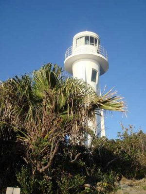
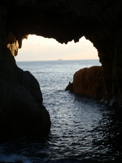
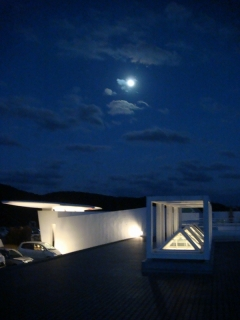
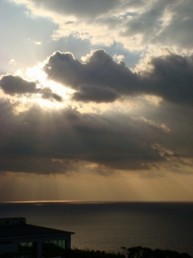
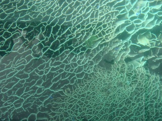
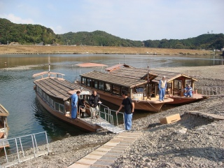
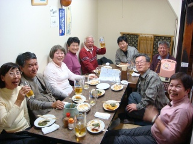

<足摺岬>
1日目はここの夕日が見たくて、一直線に向かいました。
沈む夕日はもちろん、満月の夜の深い青さも、海面に映える朝日も最高にきれいでした。
幸運に感謝。なお、下の白山洞門は花崗岩の海蝕洞門としては日本一の規模です。

<四万十川>
下流では遊覧船に乗り伝統漁法を見学。（ホント、舟が好きだねぇ）
中流では沈下橋やきれいな流れを見ることができました。
<今治>
2日目の夜は、今治の街に出て名物の「やきとり」を食べて盛り上がりました。
また3日目午前中サイクリングしたあとは、昼食として大島の料理旅館で
瀬戸内海の新鮮な海鮮料理を満喫。大きな鯛も蛸も豪快に一匹丸揚げでした。
（食べる方はもっと好き！）
More
<竜串・見残し>
竜串から、弘法大師も見残したという「見残し」まで、グラスボートで移動。
グラスボートでは海中のシコロサンゴ（天然記念物）や大小色とりどりの
魚を見ることが出来ました。そして見残しでは右の「蜂の巣城」をはじめ、
多くの奇岩を観賞。
2007年は11月23〜25日まで、高知県と愛媛県を回りました。
足摺岬・竜串・四万十川・今治など。そして初の試みとして、今治から瀬戸内海に浮かぶ
大島まで来島海峡大橋をサイクリングしました。天気もよく、とても爽快でした。
More






More
More
More